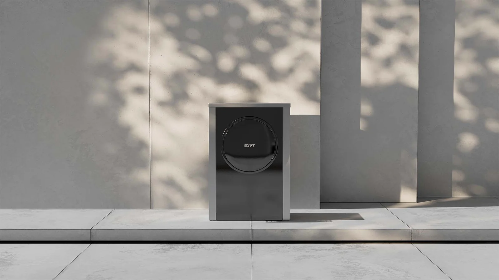

Luft/vattenvärme.
Energin finns i luften. Värmen får du hemma.
Värme och varmvatten från uteluften. Ett alternativ för hus med vattenburet värmesystem.

Välj modell.
Vi hjälper dig vidare.
Utforska 2 modeller från IVT. Läs mer på respektive produktsida och ladda ned originalens produktblad.
Se hur det fungerar.
Se IVT:s filmer om värmepumparna. Välj en film när du vill veta mer.
Filmer hämtas från IVT:s videokällor först när du väljer att spela upp dem.
Varför IVT luft/vattenvärmepumpar
Luft/vattenvärmepumpen är det självklara valet när man inte har möjlighet att installera en vätska/vatten värmepump. När man t.ex. vet om att det är långt till berg eller man har en för liten tomt för att gräva ner jordvärme. Besparingen du gör om du installerar en IVT AirX 400 är så stor att den kan jämföras med en bergvärmepump. Och då slipper du borra!
Varför luft/vattenvärme? Fördelar med Luft/vattenvärme:
- Ger en stor besparing
- Lägre kostnad för installation än för exempelvis bergvärme
- Inga större ingrepp på tomt och mark vid installation
- Det krävs inga tillstånd
Nackdelar med luft/vattenvärme:
- Kräver vattenburet värmesystem
- Använder en del tillskott av el
- Syns på utsidan av fastigheten
- Svår att kunna sätta in i nybyggda fastigheter p.g.a. de nya bygg- och boreglerna som införts
Luft/vattenvärme
En luft/vattenvärmepump hämtar energin som finns i uteluften och omvandlar den så att du kan få värme och varmvatten i huset. Vanligtvis installeras en luft/vattenvärmepump tillsammans med en kompatibel innedel från samma tillverkare, som även innehåller en varmvattenberedare, eltillskott och en styrenhet. Skulle det exempelvis finnas en befintlig vedanläggning i din bostad går det bra att även komplettera denna med en luft/vattenvärmepump.
Effektiv värme hemma med en luft/vatten-värmepump
Ju fuktigare luften är desto mer energi finns det att hämta ur luften. Fukten gör alltså värmepumpen mer effektiv. Även luftens temperatur är direkt avgörande på hur effektiv värmepumpen är. Ju högre temperatur utomhusluften har, desto högre verkningsgrad (COP) får din luft/vatten-värmepump. Under årets kallare perioder, då temperaturen ute är betydligt lägre, sjunker istället verkningsgraden. Historiskt sett så har detta alltid varit luft/vattenvärmepumparna största nackdel, att de tappar effekt när utomhusluften är kall, framförallt eftersom det är just då som fastigheten kräver som mest energi. Fram till ca 2005 stängdes luft/vatten-värmepumparna av då utomhustemperaturen nådde ca -10 grader. Dette ledde till att man inte ansåg luft/vatten-värmepumpar som tillräckligt lönsamma att ha igång i lägre temperaturer eftersom deras effektivitet var så låg och energiförbrukning så hög. Det dröjde så länge som till år 2020 innan man åter igen skulle börja låta luft/vattenvärmepumpar gå så lågt som till -20 grader om rätt förutsättningar fanns. Detta på grund av att att de blivit såpass mycket bättre och mer effektiva än de varit tidigare.
Ett bra alternativ för ett varmt hem
I takt med att luft/vattenvärmepumpar har ökat i effektivitet så har även besparingen med energi ökat rejält, vilket också har gjort att skillnaden mot vätska/vatten-värmepumpar har minskat. En högre energibesparing i kombination med en lägre priser för inköp och installation och gör en luft/vatten-värmepump till ett starkt alternativ och en bra investering i de flesta fastigheter .
En luft/vattenvärmepump är ett självklart val när man inte har möjlighet att installera bergvärme eller en annan typ av vätska/vatten-värmepump, om man exempelvis inte vet hur nära man har till berggrund eller om man har för liten tomt för att gräva ner jordvärme.
Med dagens värmepumpar finns bra möjligheter för besparing genom att sätta in en luft/vattenpump i huset. Enligt Energimyndigheten är det möjligt att spara närmare 70 % av kostnaderna vad gäller uppvärmning och varmvatten med en luft/vattenvärmepump. Sett till detta räknas därför alltså luft/vattenvärmepumparna som i princip lika effektiva som bergvärmepumpar. Dessutom utgör de samtidigt en betydligt billigare investering med tanke på installationskostnaden. Återbetalningstiden blir därför betydligt kortare än för exempelvis en bergvärmepump.
Luft/vattenvärmepumpar värmer Sveriges kuster
Längs Sveriges kustremsor är det ofta ett bra klimat för att en luft/vattenvärmepump ska bli så effektiv som möjligt. Där är temperaturen vintertid oftast mildare och fuktigare vilket ökar effektiviteten hos värmepumpen. I norra Sverige är det inte alls lika vanligt att man installerar luft/vatten-värmepumpar eftersom vintrarna där många gånger är både längre och kallare.
Många gånger är det även svårt att installera luft/vattenvärmepumpar vid nybyggnation eftersom de i dessa lägen behöver en stor del eltillskott under de kallare perioderna av året. Eftersom de nya bo- och byggreglerna (BBR) bestämmer hur mycket el en fastighet får förbruka, utesluts luft/vattenvärmepumpar som alternativ då dessa värmepumpar behöver använda sig av en större mängd eltillskott än vad reglerna tillåter.
En modern värmekälla i svenska hem
Moderna luft/vattenvärmepumpar har väldigt låg ljudnivå och är idag en diskret värmekälla, ett resultat som har varit av hög prioritet hos tillverkarna en lång tid. I hus som använder sig av dagens luft/vattenvärmepumpar upplevs minimala problem till följd av höga ljud, och de anses idag vara ett bekvämt och miljövänligt alternativ till uppvärmning och en bra investering i fastigheten.
Viktigt att veta är att luft/vattenvärmepumpar avger stora mängder kondens och tövatten när de är igång och det bästa alternativet för att undvika detta vatten på ställen där man inte vill ha det är att även koppla in avrinning med värmekabel till ett avlopp för dagvatten.
Livslängden hos luft/vattenvärmepumpar uppskattas till ca 18-20år.